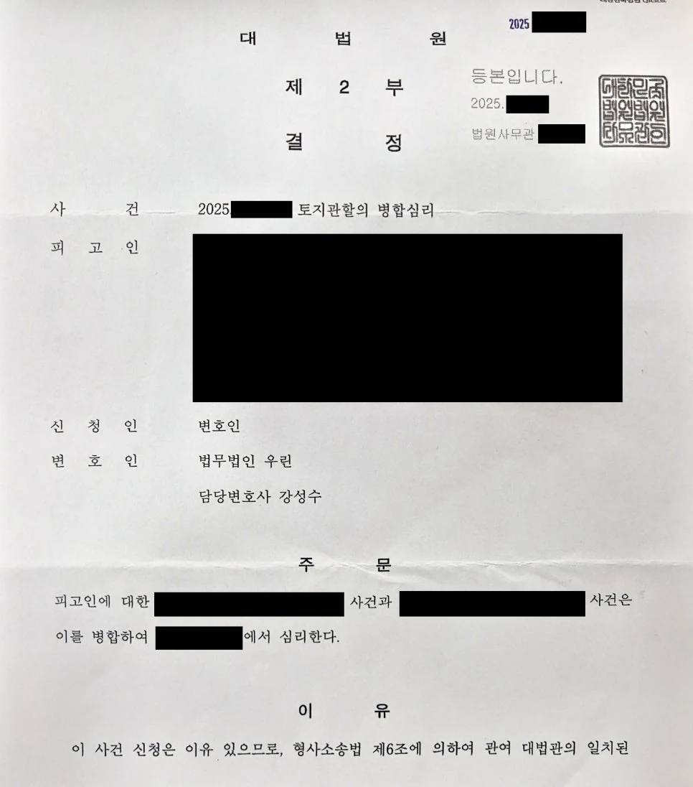

핵심 결과
의뢰인은 서로 다른 지역 법원에서 형사재판을 따로 받고 있었습니다.
사실관계와 증거가 상당 부분 겹쳤지만, 재판이 나뉘어 진행되면서 시간과 비용, 방어 부담이 커진 상황이었습니다.
법무법인 우린은 두 사건의 관련성과 증거 중복성을 정리해 대법원에 병합심리를 신청했고, 결국 하나의 법원에서 함께 심리하도록 결정을 받아냈습니다.
| 구분 | 내용 |
|---|---|
| 사건 분야 | 형사재판 병합심리 |
| 문제 상황 | 서로 다른 법원에서 재판이 따로 진행 |
| 핵심 쟁점 | 두 사건의 관련성, 증거와 증인 중복, 방어권 보장 |
| 주요 대응 | 대법원 병합심리 신청, 사건 구조 비교, 증거 중복성 정리 |
| 최종 결과 | 대법원 결정으로 병합심리 |
사건 개요
의뢰인은 특정 업무를 처리하는 과정에서 형사사건에 휘말렸습니다.
문제는 사건이 한 곳에서만 진행된 것이 아니었다는 점입니다.
수사기관과 관할이 달라지면서 A지청과 B지청에서 각각 따로 기소가 되었고, 결국 A지방법원과 B지방법원에서 별도 재판을 받아야 하는 상황이 되었습니다.
의뢰인 입장에서는 같은 흐름의 사건을 두 번 설명해야 했습니다.
비슷한 증거와 비슷한 증인을 두 법원에서 반복해서 다뤄야 했고, 재판 출석 부담도 커졌습니다.
형사재판이 나뉘어 진행되면 방어 전략도 흩어지고, 처벌 위험도 더 커질 수 있습니다.
위험했던 이유
- 서로 다른 법원에서 재판이 따로 진행됐습니다.
- 증거와 증인이 상당 부분 겹쳤습니다.
- 같은 취지의 진술을 반복해야 했습니다.
- 방어 전략이 분산될 수 있었습니다.
- 별도 판결이 나오면 형량 관리가 더 어려워질 수 있었습니다.
Q&A로 보는 병합심리
Q. 법원에 “사건을 합쳐달라”고 신청하면 바로 합쳐지나요?
아닙니다.
서로 다른 법원에 계속 중인 형사사건을 하나로 합치는 문제는 매우 까다롭습니다.
단순히 불편하다는 이유만으로는 부족합니다.
두 사건이 왜 함께 심리되어야 하는지, 증거와 증인이 얼마나 겹치는지, 따로 재판할 경우 방어권에 어떤 문제가 생기는지를 구체적으로 설명해야 합니다.
| 검토 요소 | 설명 |
|---|---|
| 사건 관련성 | 두 사건이 같은 흐름 또는 같은 사실관계에서 나온 것인지 |
| 증거 중복 | 제출될 증거가 얼마나 겹치는지 |
| 증인 중복 | 같은 증인을 반복해서 불러야 하는지 |
| 방어권 문제 | 재판이 나뉘어 피고인의 방어가 어려워지는지 |
| 절차 효율 | 하나로 심리하는 것이 더 공정하고 효율적인지 |
해결 전략
1. 두 사건이 사실상 하나의 흐름이라는 점을 정리했습니다
A법원과 B법원에 제출된 공소사실을 각각 비교했습니다.
겉으로는 별개 사건처럼 보였지만, 실제로는 같은 업무 처리 과정에서 나온 연장선상의 문제라는 점을 정리했습니다.
재판부가 보기 쉽게 사건의 흐름을 나누고, 공통되는 부분과 달라지는 부분을 구분했습니다.
2. 겹치는 증거와 증인을 표로 정리했습니다
병합심리에서는 단순 주장보다 시각화가 중요합니다.
양쪽 재판에서 반복되는 증거, 중복되는 증인, 같은 취지로 다뤄질 쟁점을 표로 정리했습니다.
따로 재판하는 것이 얼마나 비효율적인지, 피고인의 방어권에 어떤 부담을 주는지 설명했습니다.
3. 대법원에 정식 병합심리 신청을 했습니다
서로 다른 법원의 사건을 합치는 절차는 단순한 의견서 제출로 끝나지 않습니다.
대법원에 병합심리 필요성을 정리한 신청서를 제출했습니다.
핵심은 실체적 진실 발견, 방어권 보장, 절차의 효율성이었습니다.
| 대응 항목 | 준비한 내용 |
|---|---|
| 사건 구조 분석 | A법원 사건과 B법원 사건의 공소사실 비교 |
| 증거 정리 | 중복 증거와 공통 쟁점 분류 |
| 증인 정리 | 반복 출석 가능성이 있는 증인 확인 |
| 방어권 주장 | 피고인이 두 재판을 동시에 방어해야 하는 부담 설명 |
| 신청 절차 | 대법원 병합심리 신청서 제출 |
결과
대법원은 병합심리 필요성을 검토했습니다.
그 결과 두 사건을 따로 진행하는 것보다 하나의 법원에서 함께 심리하는 것이 타당하다고 판단했습니다.
결국 한쪽 법원의 사건을 다른 법원으로 보내 병합심리하도록 결정이 내려졌습니다.
의뢰인은 더 이상 두 법원을 오가며 재판을 받을 필요가 없어졌고, 방어 전략도 하나로 모을 수 있게 되었습니다.
최종 결과
서로 다른 법원에서 따로 진행되던 형사재판이 대법원 결정으로 병합심리되었습니다.
재판 부담을 줄이고, 하나의 전략으로 방어할 수 있는 기반을 마련했습니다.
병합심리가 중요한 이유
형사재판이 여러 법원에서 따로 진행되면 단순히 불편한 문제로 끝나지 않습니다.
방어 자료가 흩어지고, 같은 증거를 반복해서 설명해야 하며, 각 재판의 결과가 따로 쌓이면서 형량 관리도 어려워질 수 있습니다.
그래서 사건이 실제로 연결되어 있다면 병합심리 가능성을 반드시 검토해야 합니다.
형사사건 병합은 편의를 위한 절차가 아니라, 방어권을 지키기 위한 전략이 될 수 있습니다.
결론
두 곳 이상의 법원에서 형사재판을 받고 있다면, 단순히 출석 날짜만 관리해서는 부족합니다.
사건 구조가 연결되어 있는지, 증거가 겹치는지, 하나의 재판으로 모을 수 있는지 먼저 검토해야 합니다.
사무장·상담실장 없이 변호사가 직접 상담합니다
법무법인 우린은 강성수 변호사가 직접 상담하고, 기록 검토부터 병합심리 신청, 재판 대응까지 직접 진행합니다.
형사재판이 여러 곳에서 동시에 진행 중이라면, 먼저 사건 구조를 정확히 정리해야 합니다.
이 글은 일반적인 법률 정보 제공을 위한 자료이며, 개별 사건의 결과를 보장하지 않습니다. 구체적인 대응은 사실관계와 증거에 따라 달라질 수 있습니다.